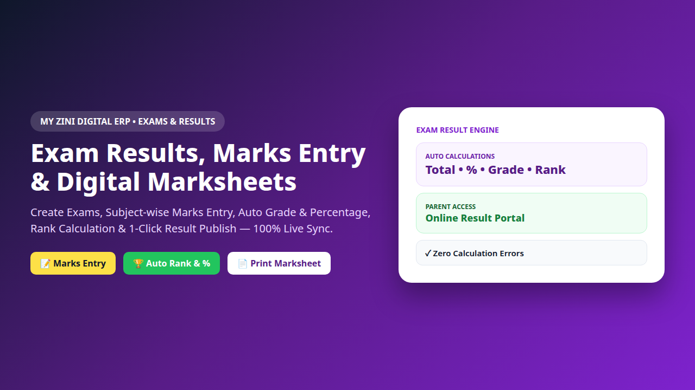
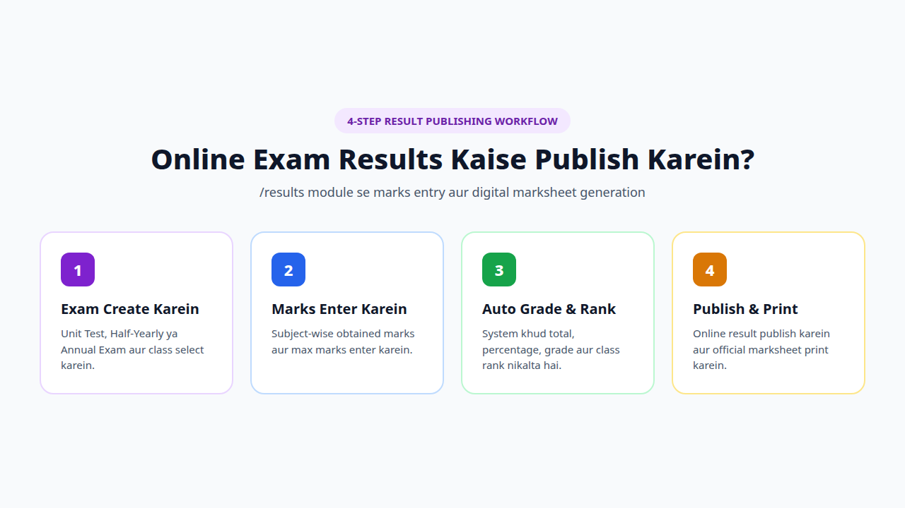
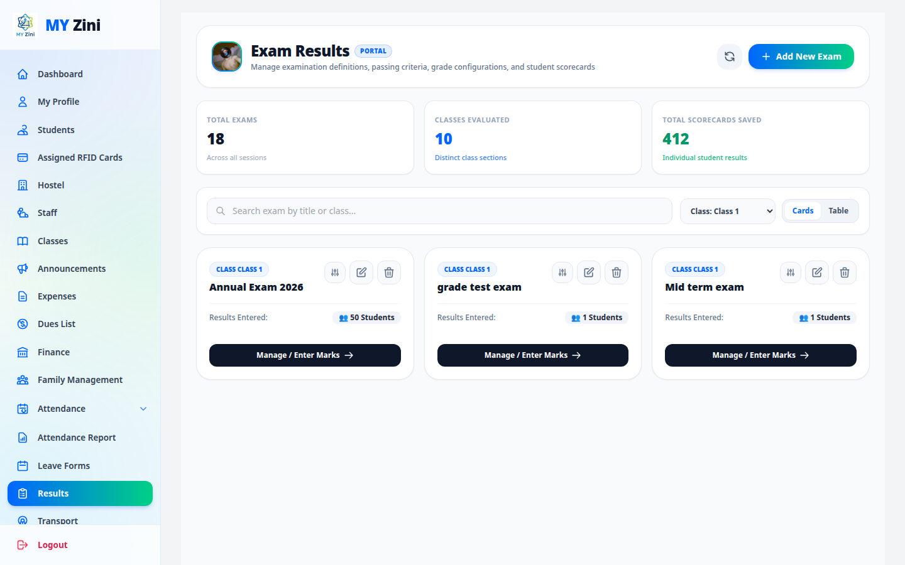
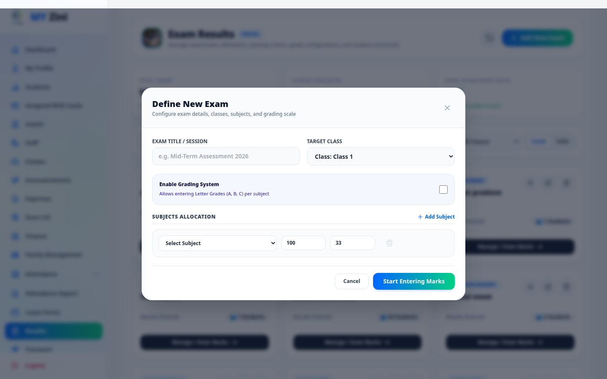
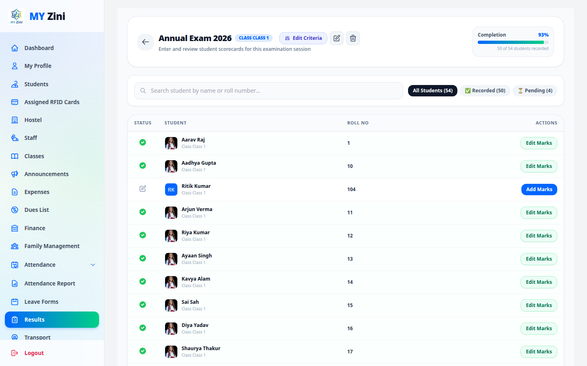
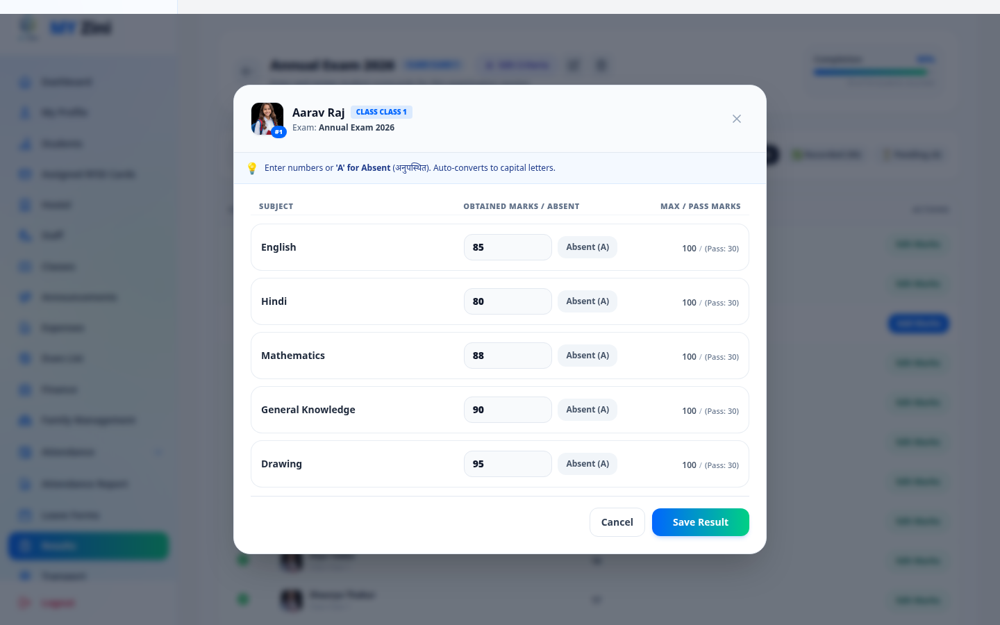
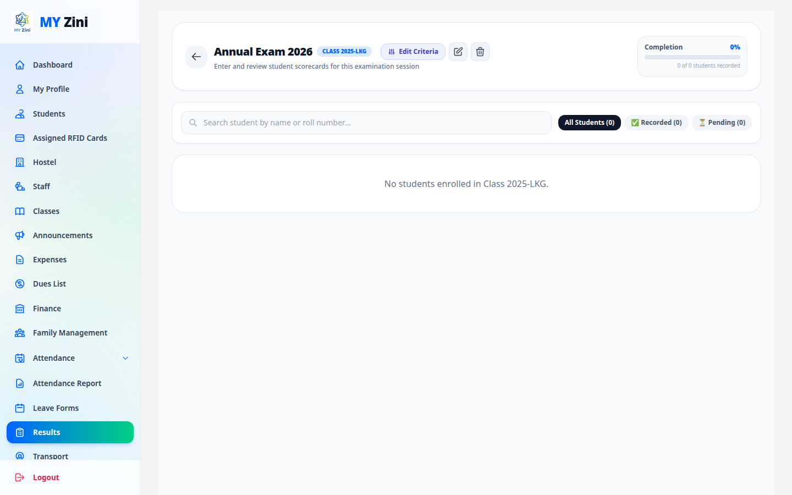
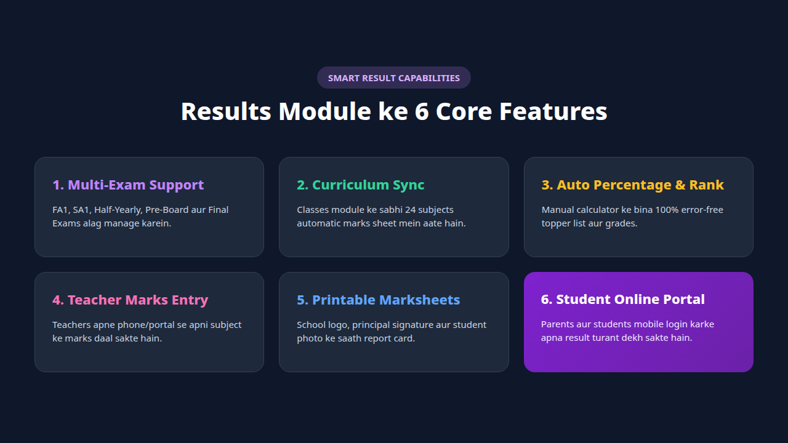
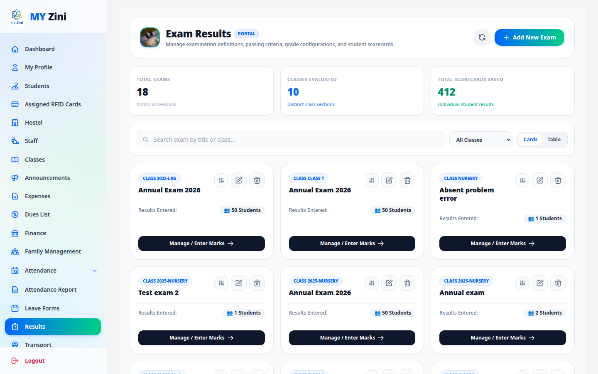
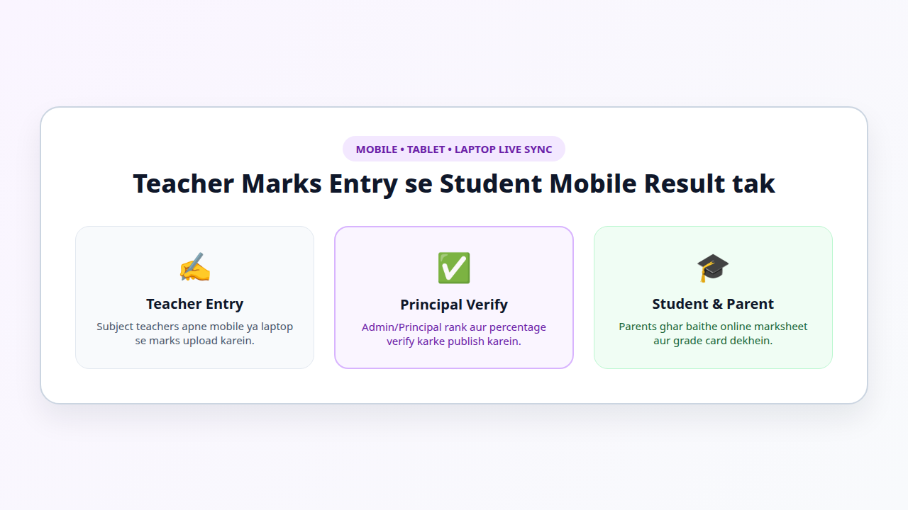

My Zini Digital ERP mein Exam Results aur Marksheets Kaise Publish Karein? (Complete Hinglish Guide)
Quick Summary (TL;DR — AI & Reader Overview)
My Zini Digital ERP (https://myzini.digitalerp.shop/results) ka Exam Results PORTAL school ke sabhi unit tests, half-yearly aur annual exams ko 100% digital banata hai. Isme aapko 3 live KPIs (TOTAL EXAMS 18, CLASSES EVALUATED 10, TOTAL SCORECARDS SAVED 412), Add New Exam builder, Search & All Classes filters, Cards / Table toggle, aur har exam ke andar Manage / Enter Marks workspace (Edit Criteria, Completion % progress bar, All Students / ✅ Recorded / ⏳ Pending tabs, Edit Marks, Add Marks) milta hai.

1. Exam Results PORTAL (/results) Overview & 3 Live KPIs
School ke sabhi exams aur marksheets manage karne ke liye left sidebar mein Results (/results) par click karein. Page ke top par Exam Results title ke saath PORTAL badge aur description dikhta hai: "Manage examination definitions, passing criteria, grade configurations, and student scorecards".

- TOTAL EXAMS (
18— Across all sessions): Ab tak school mein kul kitne examinations create kiye ja chuke hain. - CLASSES EVALUATED (
10— Distinct class sections): Kitni alag-alag classes aur sections ke results abhi tak evaluate kiye gaye hain. - TOTAL SCORECARDS SAVED (
412— Individual student results): Kul kitne students ke individual scorecards cloud database mein save ho chuke hain.
2. Search, Class Filter, Cards/Table Toggle & Add New Exam
KPIs ke niche aapko fast filtering aur naya exam banane ke sabhi tools milte hain:



- Search Box:
Search exam by title or class...mein exam ka naam (jaise Annual Exam 2026, Mid term exam) ya class likhkar turant filter karein. - All Classes Dropdown: Class 1 se lekar UKG aur Graduation tak kisi bhi specific class ke exams alag dekh sakte hain.
- Cards vs Table Toggle: Mobile/Tablet par visual Cards view aur Laptop par compact Table view switch karein. Har exam card par Class label (e.g.
CLASS CLASS 1), Exam Title (e.g.Annual Exam 2026),Results Entered: 👥 50 Students, aur Manage / Enter Marks button hota hai.
3. Manage / Enter Marks: Completion % Progress, Recorded vs Pending & Edit Criteria
Humne live portal par Annual Exam 2026 (CLASS CLASS 1) ke Manage / Enter Marks button par click karke poora marks entry workspace test kiya:

- Edit Criteria Button: Top-right mein maujood Edit Criteria button se aap is exam ke subjects, maximum marks, passing marks aur grading scale (A+, A, B, C...) ko kabhi bhi update kar sakte hain.
- Completion % Progress Bar: Live dikhata hai ki class ke kitne students ke marks upload ho chuke hain — jaise
Completion 93% — 50 of 54 students recorded. - 3 Smart Filter Pills:
- All Students (
54): Poori class ki list. - ✅ Recorded (
50): Jinke marks save ho chuke hain (aage Edit Marks button dikhta hai). - ⏳ Pending (
4): Jin bache hue students (jaise Roll 104 Ritik Kumar) ke marks abhi dalne baki hain (aage Add Marks button dikhta hai).
- All Students (


4. Smart Result Capabilities & Curriculum Subjects Sync



Jab aap My Zini Digital ERP mein exam results banate hain, toh aapko manual Excel formulas lagane ya calculator se percentage nikalne ki bilkul zaroorat nahi padti:
- Subjects Automatic Sync: Classes module mein jo 24 Curriculum Subjects aapne add kiye hain (English, Mathematics, Science, Hindi, Computer, etc.), woh criteria setup mein seedha mil jaate hain.
- Zero Calculation Errors: Subject marks enter karte hi total obtained marks, out-of marks, percentage (%), pass/fail status aur grade (e.g. A+, A, B) automatic calculate ho jata hai.
- Toppers & Class Rank: Poore class ke marks save hote hi system sabse zyada percentage wale students ko rank 1, 2, 3 order mein sort karne mein madad karta hai.
- Generator Tools se Marksheet Print: Save kiye gaye scorecards ko aap Generator Tools ke zariye school logo aur principal signature ke saath professional marksheet par print kar sakte hain.
Passing Criteria, Grade Configuration & 4 Real-World Exam Scenarios
Har school ka grading system alag hota hai — kuch CBSE pattern (A1, A2, B1, B2) follow karte hain toh kuch State Board percentage aur division (1st, 2nd, 3rd Division) dikhate hain. My Zini Digital ERP ke Add New Exam aur Edit Criteria options aapko poori flexibility dete hain:
- Subject-wise Maximum & Passing Marks: Aap har subject ke liye alag maximum marks (jaise Theory 80 + Practical 20 = 100, ya Unit Test 20 marks) aur minimum passing marks (e.g. 33%) set kar sakte hain.
- Custom Grade Slabs: Percentage ke hisab se A+ (90–100%), A (80–89%), B+ (70–79%), B (60–69%), C (50–59%), D (33–49%), aur Fail/Needs Improvement (<33%) configure karein.
- Scenario 1 — Medical Leave / Absent Student Handling: Agar 54 students mein se 4 students exam ke din absent the (jaise live Class 1 mein
⏳ Pending (4)), toh teachers baki 50 students ka result turant lock kar sakte hain aur baad mein re-test lene par Add Marks se un 4 ka scorecard add kar sakte hain. - Scenario 2 — Multiple Teachers Entering Marks Together: Kyunki poora system cloud-based hai, English teacher, Maths teacher aur Science teacher apne-apne laptop ya phone se ek hi exam mein marks enter kar sakte hain bina kisi file conflict ke.
- Scenario 3 — PTM Digital Scorecard Review: Parents-Teacher Meeting (PTM) ke din principal aur teachers mobile ya tablet par
/resultskholkar parents ko pichhle Mid-Term aur Annual Exam ki tulna (comparison) dikha sakte hain. - Scenario 4 — Session Promotion Verification: Final exam results ke baad Students module mein students ko agli class mein promote karne se pehle
TOTAL SCORECARDS SAVEDverify karna behad aasan ho jata hai.
5. Mobile, Tablet aur Laptop Live Sync + Exam Result Best Practices

Bina Galti ke Fast Result Publish Karne ke 5 Steps
- Exam Shuru Hone se Pehle Setup Karein: Exam date sheet ke saath hi Add New Exam se har class ka exam create karein aur passing criteria (jaise 33% per subject) lock kar dein.
- Teachers ko Deadline Dein aur Completion % Track Karein: Principal office se rozana check karein ki kis class ka Completion % 100% ho gaya hai aur kiska 80–90% par ruka hai.
- ⏳ Pending Filter se Missing Marks Dhoondhein: Result declare karne se 1 din pehle ⏳ Pending tab par click karein — sirf wahi 3–4 students dikhenge jinke marks reh gaye hain (jaise Absent ya Medical leave wale students), unhe Add Marks se update karein.
- Rechecking ke Baad Edit Marks Use Karein: Agar kisi parent ne paper rechecking ke liye diya ho aur marks badhne hon, toh ✅ Recorded tab mein jaakar Edit Marks se turant scorecard update kar dein.
- Dues List Check karke Online Result Share Karein: Result day par parents
myzini.digitalerp.shopke Student Login (Mobile) par jaakar apne bacche ka digital scorecard ghar baithe dekh sakte hain!
School Result Day Playbook: 3-Phase Digital Execution Guide
Pehle schools ko exam khatam hone ke baad 15 se 20 din tak manual register mein marks jodne aur report cards likhne mein lag jaate the, aur phir bhi totaling mistakes reh jati thi. My Zini Digital ERP ke saath aap poora Result Day sirf 3 phases mein 100% accurate bana sakte hain:
- Phase 1 — Pre-Exam Preparation (Exam se 1 Hafta Pehle): Sabhi classes ke liye Add New Exam mein exam definitions bana lein, aur Classes module se sabhi subjects verify kar lein. Saath hi Generator Tools se sabhi students ke Admit Cards print karke distribute kar dein.
- Phase 2 — Live Marks Evaluation (Exam Week ke Dauran): Jaise-jaise har paper check hota jaye, subject teachers ko bol dein ki woh usi din Manage / Enter Marks mein apne subject ke numbers save karein. Principal dashboard par TOTAL SCORECARDS SAVED aur exam ke andar Completion % bar se live progress monitor karein.
- Phase 3 — Verification, Print & Parent WhatsApp Notice (Result Day): Jab har class ka Completion
100%ho jaye, tab ek baar topper list aur grace marks verify karein. Uske baad Announcements ya Send WhatsApp ke zariye sabhi parents ko result publish hone ki khabar bhej dein — isse school campus mein bheed bhi kam hogi aur parents digital scorecard dekhkar khush bhi honge!
Coaching Centers & Weekly Test Series ke liye Best Feature: Sirf schools hi nahi, balki coaching institutes aur tuition batches bhi Exam Results PORTAL ka use karke har Sunday hone wale weekly tests (jaise Test exam 2 ya Test examination results 2026) ke scorecards save kar sakte hain. Har student ka roll-wise score, rank aur performance improvement poore saal cloud mein safe rehta hai, jisse batch toppers ko reward dena aur weak students par dhyan dena behad aasan ho jata hai.
6. Quick Reference Table (Exam Results Portal Options)
| Option / Button | Kahan Milta Hai | Exact Kaam |
|---|---|---|
| Add New Exam | /results Top Right | Naya exam, class, passing criteria aur grade rules banana |
| Search & All Classes | /results Toolbar | Exam title ya class ke hisab se exams filter karna |
| Cards / Table Toggle | /results Toolbar | Visual Cards ya compact Table view mein switch karna |
| Manage / Enter Marks | Exam Card | Class ke sabhi students ka scorecard entry page kholna |
| Edit Criteria | Inside Exam | Subjects, max marks, passing marks aur grades edit karna |
| Recorded / Pending Tabs | Inside Exam | Completed (Edit Marks) aur baki students (Add Marks) filter karna |
Frequently Asked Questions (FAQs)
1. Kya ek hi class ke liye saal mein ek se zyada exams (Unit Test, Half-Yearly, Annual) bana sakte hain?
Haan! Live portal par dekha gaya ki Class 1 aur Nursery ke liye Mid term exam, Test exam, Annual Exam 2026 jaise multiple exams alag-alag banaye gaye hain.
2. Completion % progress bar kya dikhata hai?
Yeh batata hai ki us class ke total enrolled students mein se kitne pratishat students ke marks save ho chuke hain — jaise 93% (50 of 54 students recorded).
3. Bache hue 4 students ke marks jaldi kaise daalein?
Exam ke andar ⏳ Pending (4) pill par click karein — sirf wahi 4 students dikhenge, aur unke aage Add Marks dabakar turant numbers save kar dein.
4. Kya marks save karne ke baad unhe edit kar sakte hain?
Bilkul! ✅ Recorded tab mein har student ke saamne Edit Marks button hota hai jisse aap kabhi bhi correction kar sakte hain.
5. Kya teachers apne phone se marks enter kar sakte hain?
Ji haan! Teachers teacher.digitalerp.shop ya responsive mobile view se apni class ke marks enter kar sakte hain, jo turant Admin ke TOTAL SCORECARDS SAVED mein sync ho jata hai.
6. Passing criteria aur grade configuration kaise set hota hai?
Naya exam banate waqt (Add New Exam) ya baad mein exam ke andar Edit Criteria button dabakar aap passing percentage aur grade slabs set kar sakte hain.
7. Kya students apna result online mobile par dekh sakte hain?
Haan, myzini.digitalerp.shop par Student Login (Mobile) ke zariye students aur parents apna digital result aur scorecard dekh sakte hain.
8. Marksheet print karne ke liye kaun sa module use hota hai?
Results save karne ke baad aap Generator Tools (/generator-tools) se official printable marksheets aur certificates generate kar sakte hain.
9. Agar kisi exam mein 0 students dikh rahe hon (e.g. 2025-LKG) toh iska kya matlab hai?
Iska matlab hai ki us purane/archived session class mein abhi koi active student enrolled nahi hai (No students enrolled in Class 2025-LKG), jabki current classes mein sabhi active students dikhte hain.
10. Apne school ke liye My Zini Digital ERP kaise shuru karein?
Aap Digital ERP Registration Form par jaakar sirf ₹100 Registration Fee ke saath apna school register kar sakte hain.
11. Kya Exam Results page par har class ke liye alag-alag exams filter kar sakte hain?
Haan! /results ke toolbar mein All Classes dropdown aur Search exam by title or class... box diya gaya hai jisse aap kisi bhi class ke sabhi exams 1 second mein filter kar sakte hain.
12. Cards aur Table view mein kya antar hai?
Cards view mobile aur tablet par har exam ko bade, clean cards ke roop mein dikhata hai, jabki Table view laptop par ek hi screen mein zyada exams aur Results Entered count ek saath dekhne ke liye best hai.
13. Kya Roll Number order mein students ke marks enter kiye ja sakte hain?
Ji haan! Manage / Enter Marks ke andar student table mein ROLL NO column clear dikhta hai (jaise Roll 1, 2, 10, 11, 12...) jisse marks sheet ya answer bundle se match karke entry karna bahut tez ho jata hai.
14. Kya Exam Results Portal par har student ka photo aur class name bhi dikhta hai?
Haan! STUDENT column mein student ka photo/avatar, full name (jaise Aarav Raj, Aadhya Gupta), aur unki class saaf dikhti hai taaki marks enter karte waqt kabhi galat student select na ho aur accuracy 100% bani rahe.
15. Kya purane sessions (jaise 2025-NURSERY ya 2025-LKG) ke results archive mein safe rehte hain?
Bilkul! Live portal par aap dekh sakte hain ki pichhle sessions ke exams (e.g. CLASS 2025-LKG, CLASS 2025-NURSERY) bhi poore scorecards ke saath safely stored rehte hain taaki kabhi bhi purana record dekha aur print kiya ja sake.
16. Kya Exam Results module mobile phone aur tablet par bhi kaam karta hai?
Ji haan! Chahe aap laptop par Table view use kar rahe hon ya mobile/tablet par Cards view, poora Results Portal har device par responsive adjust hota hai aur teachers kahin se bhi marks update kar sakte hain bina kisi laptop ki zaroorat ke.
17. Result publish karne se pehle pending fees kaise check karein?
Exam results declare karne se pehle aap Fee Dues Radar (/dues-list) par jaakar class-wise pending dues check kar sakte hain aur parents ko polite WhatsApp reminder bhej sakte hain taaki result ke saath fee recovery bhi 100% ho aur school cashflow strong bana rahe.
18. Agar kisi exam mein galti se galat class select ho jaye toh kya karein?
Aap exam ke andar Edit Criteria button par click karke exam details, passing criteria, max marks aur grade configuration ko kabhi bhi review aur update kar sakte hain, taaki har student ka final scorecard bilkul error-free rahe aur parents ko sahi report card mile.
Digital Exam Results Aaj Hi Shuru Karein!
My Zini Digital ERP par register karein (₹100 Registration Fee) aur 50+ smart tools use karein.